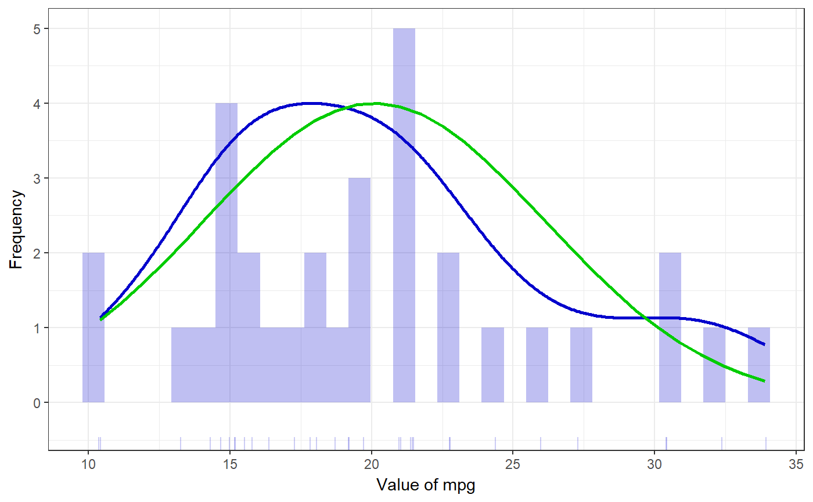

powerHist generates a histogram with a density curve and a normal density curve.
powerHist(vector, histColor = "#0000CC", distributionColor = "#0000CC", normalColor = "#00CC00", distributionLineSize = 1, normalLineSize = 1, histAlpha = 0.25, xLabel = NULL, yLabel = NULL, normalCurve = TRUE, distCurve = TRUE, breaks = 30, theme = dlvTheme(), rug = NULL, jitteredRug = TRUE, rugSides = "b", rugAlpha = .2, returnPlotOnly = FALSE)
| vector | A numeric vector. |
|---|---|
| histColor | The colour to use for the histogram. |
| distributionColor | The colour to use for the density curve. |
| normalColor | The colour to use for the normal curve. |
| distributionLineSize | The line size to use for the distribution density curve. |
| normalLineSize | The line size to use for the normal curve. |
| histAlpha | Alpha value ('opaqueness', as in, versus transparency) of the histogram. |
| xLabel | Label to use on x axis. |
| yLabel | Label to use on y axis. |
| normalCurve | Whether to display the normal curve. |
| distCurve | Whether to display the curve showing the distribution of the observed data. |
| breaks | The number of breaks to use (this is equal to the number of bins minus one, or in other words, to the number of bars minus one). |
| theme | The theme to use. |
| rug | Whether to add a rug (i.e. lines at the bottom that correspond to individual datapoints. |
| jitteredRug | Whether to jitter the rug (useful for variables with several datapoints sharing the same value. |
| rugSides | This is useful when the histogram will be rotated; for example, this can be set to 'r' if the histogram is rotated 270 degrees. |
| rugAlpha | Alpha value to use for the rug. When there is a lot of overlap, this can help get an idea of the number of datapoints at 'popular' values. |
| returnPlotOnly | Whether to return the usual |
An object, with the following elements:
The input when the function was called.
The intermediate numbers and distributions.
The dataframe used to generate the plot.
The histogram.
powerHist(mtcars$mpg)